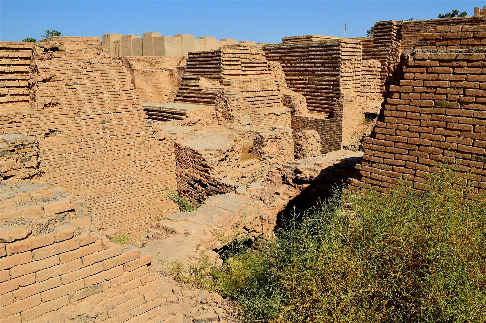

UNESCO World Heritage since 2019. 40 minutes from Karbala. One of the most undervisited ancient sites on earth.
Babylon was an ancient Mesopotamian city located in what is now Babil Governorate, about 85km south of Baghdad and 55km north of Karbala. Under Nebuchadnezzar II (reigned c. 605-562 BCE), it became the largest city in the world — an estimated 200,000-300,000 inhabitants within the walls, with an urban area that extended far beyond.
The ruins span an area of roughly 10 square kilometres, though most of what is accessible to visitors covers a more concentrated central zone. In 2019, UNESCO inscribed Babylon as a World Heritage Site — both for its outstanding universal value as an ancient city and in recognition of the extraordinary archaeological work that has protected what remains after millennia of looting, weathering, and the complicated legacy of Saddam-era reconstruction.
Babylon is not difficult to reach from southern Iraq. From Karbala, it is approximately 40 minutes by road (55km) on the main highway. From Baghdad, 85km south via the same highway — around one hour in normal traffic.
This proximity to Karbala is one of the reasons our Historical Iraq Tour combines both sites: pilgrimage and ancient history are geographically close. Many visitors to Karbala do not know Babylon is 40 minutes away. Most of them wish someone had told them.
The site requires a permit for foreign visitors, which we arrange in advance for all group members. Entry fees are modest. A site guide is strongly recommended — the archaeology requires interpretation, and the context of what you are looking at transforms the experience from a walk among walls to something considerably larger.
Babylon is genuinely ancient. Much of what you walk through are excavated foundations — low mud-brick walls, remnants of floor plans, the outlines of rooms and courtyards. This is not Petra or the Roman Forum with dramatic standing columns. It requires active imagination and some historical knowledge to see the city in what remains.
The most striking standing element is the reconstructed South Palace of Nebuchadnezzar — a controversial decision made under Saddam Hussein in the 1980s, when Iraqi workers rebuilt significant portions of the palace using new bricks stamped with Saddam's name alongside Nebuchadnezzar's inscription. Archaeologists have mixed views on this reconstruction, but for visitors, it provides a sense of scale and structure that raw ruins cannot.
Other features of note:
The Hanging Gardens of Babylon — one of the Seven Wonders of the Ancient World — have never been found at the Babylon site. Extensive excavation by Koldewey and subsequent archaeologists has located the South Palace, the Processional Way, the Esagila temple district, and the Greek Theatre, but nothing that definitively corresponds to a massive terraced garden structure.
The scholarly consensus is divided. Some historians argue the Hanging Gardens did not exist and may be a conflation of other gardens. Others suggest they were at Nineveh rather than Babylon — Oxford Assyriologist Stephanie Dalley has argued this case based on cuneiform texts. The question is genuinely open, and standing at Babylon makes it feel more interesting rather than more resolved.
Many of the most significant Babylonian artefacts are not at Babylon itself — they are distributed between the Iraq National Museum in Baghdad (which holds outstanding Mesopotamian collections including the Warka Vase and a replica Ishtar Gate), the Pergamon in Berlin, the British Museum in London, and the Louvre in Paris. The colonial-era excavations removed an enormous proportion of the portable record.
The Iraq National Museum has been substantially rehabilitated since the 2003 looting and is now open to visitors. We include Baghdad and the museum on our Historical Iraq Tour — seeing the museum alongside the Babylon site gives the full picture that neither can provide alone.
Travel October to April. The Babylon site is an outdoor site with minimal shade — summer heat (June through August) reaches 45-50°C during the day and makes sustained outdoor walking impractical. Spring (March-April) and autumn (October-November) are the most comfortable. Winter (December-February) is cool, sometimes wet, and genuinely pleasant.
Morning visits are recommended: the light is better for photography, the heat is lower, and the site tends to be quieter before organised domestic tour groups arrive later in the day.
You do not need a specialist background to find Babylon meaningful. But it rewards those who arrive with some preparation: having read a short account of Nebuchadnezzar II, of the biblical and Quranic references to Babylon (it appears in both), of what the Processional Way ceremony looked like, makes what would otherwise be a collection of brick walls into something you can hear and populate in your imagination.
We brief every group at the site entrance before the guided walk. The questions we get most often by the end: "Why is this not more famous?" and "Why is nobody here?"
Baghdad, Babylon, Karbala, Najaf, Nasiriyah, the Ziggurat of Ur, the Mesopotamian Marshes
Babylon, Karbala, Najaf, Ur, Marshes. Shorter itinerary, same core sites.
Everything: Babylon plus Kurdistan, Mosul, Erbil, Baghdad, south Iraq
Header image: Ruins of the ancient city of Babylon, Iraq, 6th century BC. Photo by Osama Shukir Muhammed Amin FRCP(Glasg), Wikimedia Commons, CC BY-SA 4.0.